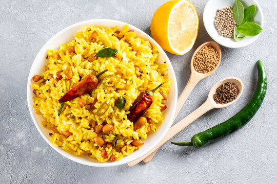

Lemon Rice Recipe
Ingredients
- 2 cups cooked rice
- 1 tbsp oil
- 1/2 tsp mustard seeds
- 1/2 tsp cumin seeds
- 1/2 tsp turmeric powder
- 1-2 green chilies (chopped)
- 1 tsp ginger (finely chopped)
- 8-10 curry leaves
- 2 tbsp peanuts or cashews
- 1/2 tsp salt (adjust to taste)
- Juice of 1 lemon
- 1 tbsp chopped coriander leaves
Instructions
- Use cooled cooked rice to prevent it from getting mushy.
- Heat oil in a pan. Add mustard seeds and let them splutter.
- Add cumin seeds, green chilies, ginger, curry leaves, and peanuts/cashews. Sauté until golden.
- Add turmeric powder and salt. Stir well.
- Add the cooked rice and mix gently.
- Turn off the heat and add fresh lemon juice.
- Garnish with coriander leaves and serve warm.
Nutritional Information
| Nutrition |
Amount |
| Calories |
250-300 kcal |
| Carbohydrates |
45g |
| Protein |
5g |
| Fat |
8-10g |
| Fiber |
2-3g |
| Vitamin C |
15-20% |
| Iron |
6-8% |